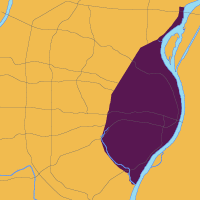
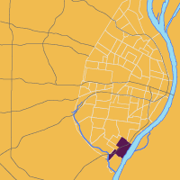
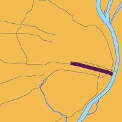
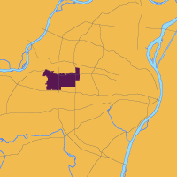
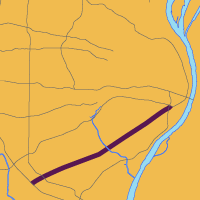
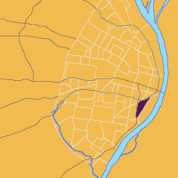

St. Louis en français

We asked Professor Lionell Cuille, the Jane and Bruce Robert Professor of French and Francophone Studies at Webster University, to talk about some French names in St. Louis. He told us about the difference between the local dialect and the way a native speaker might say the same name. Click on the speaker icon to hear what Professor Cuille had to say.





